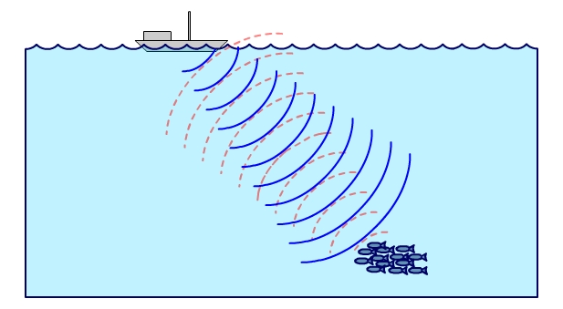
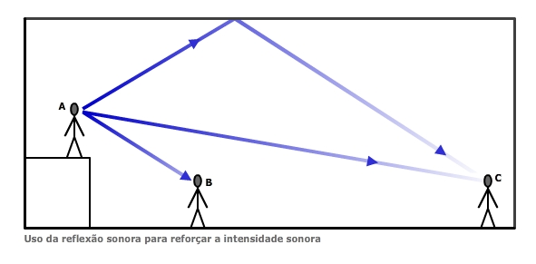
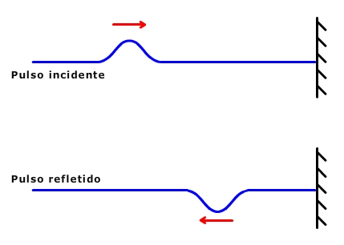

Considere um experimento onde um professor gera um pulso ondulatório que se propaga em determinado meio, até atingir uma extremidade fixa, a partir do qual não consegue passar. O quê será que acontece com o pulso?
Vemos que o pulso retorna ao meio de origem. Esse fenômeno é chamado de reflexão. Observe que nesse processo ocorre também absorção de energia na extremidade fixa, diminuindo a amplitude do pulso refletido.
Vejamos agora uma "serie de ondas" (termo comum entre surfistas) incidindo sobre uma superfície refletora. Vamos ilustrar graficamente essas ondas por meio de frentes de ondas, que são linhas que representam as cristas das ondas. Nessa ilustração a seta vermelha representa a direção de propagação das ondas.
Observe que o comprimento de onda das ondas refletidas é igual ao comprimento de onda das ondas incidentes (na ilustração, o comprimento de onda é distância entre duas frentes de onda vizinhas).
Como o meio de propagação da onda é o mesmo, então podemos afirmar que a velocidade de propagação é a mesma, assim como a frequência, que também é a mesma.
Observações experimentais mostram que existe um padrão entre o ângulo com o qual as ondas incidem na superfície e o ângulo com o qual são refletidas de volta para o meio de origem. Esse padrão já está posto na ilustração. Para enfatizá-lo vamos considerar uma reta perpendicular ao plano de reflexão (chamada de reta normal) e as retas que representam a direção de propagação das ondas incidentes e refletidas.
Para essa construção precisamos assumir que a reta normal e as retas que determinam a direção de propagação das ondas incidentes e refletidas estão em um mesmo plano. Assim sendo, os ângulos de incidência e de reflexão são iguais.
O uso do conhecimento sobre reflexão de ondas sonoras é usada, por exemplo, nos sonares, que são equipamentos que emitem sons e analisam sua reflexão, aferindo distâncias e posições dos corpos refletores. Na ilustração abaixo um barco pesqueiro usa um sonar para localizar um cardume de peixes.
Quando você fala no interior de uma sala fechada você ouve de diferentes maneiras o som que produziu. O som se propaga pelos ossos de sua cabeça e chega até os seus ouvidos (por isso você escuta sua própria voz mesmo com os ouvidos "tampados"), o som se propaga pelo ar próximo a você e também chega aos seus ouvidos. Mas o som também reflete nas paredes, no chão, no teto e em objetos diversos, retornando aos seus ouvidos.
Acontece que esses "sons" que chegam até você, mesmo tendo a mesma origem, não o fazem no mesmo instante. Assim, o som que foi refletido em uma parede próxima, retorna primeiro aos seus ouvidos do que o som que foi refletido em uma parede distante.
A animação abaixo ilustra didaticamente essa situação (clique no botão "Pulso" para gerar um pulso sonoro que será refletido nas paredes e no teto, voltando até a pessoa).
Observe que os sons refletidos, embora gerados no mesmo instante, demoram intervalos de tempo diferentes para retornar ao ouvido da pessoa.
Sabe-se que quando esse intervalo de tempo é superior a 0,1 s, a pessoa entende que são sons diferentes, e tem-se então um fenômeno chamado eco.
Se o intervalo de tempo for menor que 0,1 s (mas muito próximo desse valor), a pessoa entende que é um som só, mas com maior duração, mais prolongado. Se o intervalo de tempo for próximo de 0,1 s, esse prolongamento irá gerar perda da compreensão do som. Chamamos esse fenômeno de reverberação.
Mas se esse intervalo de tempo for suficientemente menor que 0,1 s haverá um reforço do som, mantendo-se a compreensão do mesmo. Para palestras, peças de teatro ou apresentações musicais a reverberação é indesejável, mas o reforço é desejável.
O uso do reforço é fundamental quando se projeta um teatro, onde as pessoas distantes do palco precisam ouvir tão bem quanto as pessoas que estão perto. Em contrapartida, em um estúdio de gravação musical, geralmente pequento, a reflexão dos sons não é desejável, pois pode gerar reverberção, diminuindo a nitidez dos mesmos. Nesse caso, os músicos querem ouvir apenas o som emitido diretamente dos instrumentos ou das respectivas caixas de som.
No caso do teatro, as superfícies são planejadas para, por meio da reflexão, fazer com que o som chegue a todas as pessoas presentes.
Já em um estúdio, as paredes são revestidas por espumas que lembram o formato de uma "caixa de ovos" (materiais porosos ou fibrosos). O material absorve energia das ondas sonoras (transforma esse energia em energia térmica) e as curvas aumentam a área da superfície de absorção.
No vídeo de abertura dessa aula vemos um pulso incidindo sobre uma estrutura cuja extremidade é fixa. Observamos que esse pulso é refletido com inversão de fase (a crista do pulso é inicialmente para cima, mas após a reflexão fica para baixo). Isso ocorre porque o pulso tende a "empurrar" a extremidade fixa para cima (no caso do experimento do vídeo), mas esta extremidade, por estar fixa, não se move e aplica uma força sobre o meio no sentido oposto (para baixo), fazendo com que o pulso retorne invertido ao meio de origem.
Se a estrutura tiver a extremidade livre, o pulso é refletido sem inversão de fase. As imagens abaixo ilustram esses dois fenômenos.
